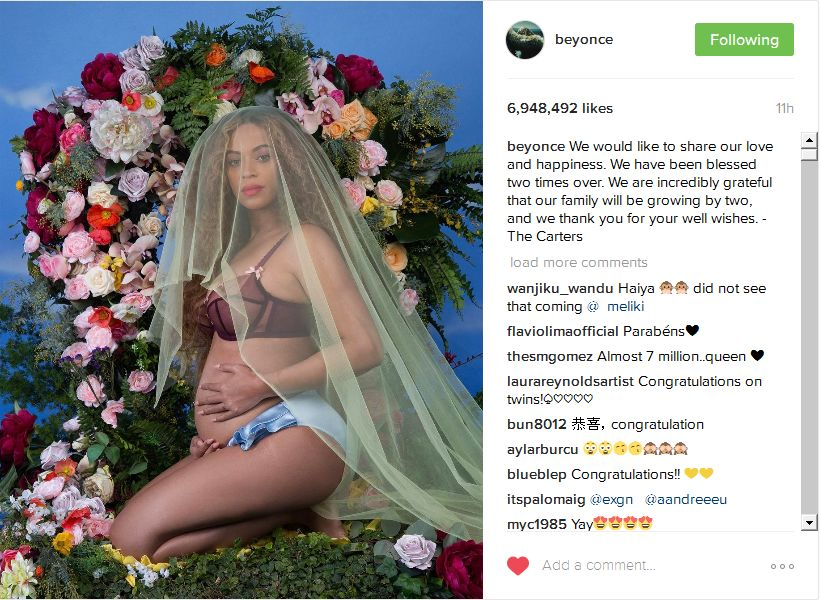

Born on September 4, 1981, in Houston, Texas, Beyoncé Knowles first captured the public's eye as lead vocalist of the R&B group Destiny's Child. She later established a solo career with her debut album Dangerously in Love, becoming one of music's top-selling artists with sold-out tours and a slew of awards. Knowles has also starred in several films, including Dream Girls. She married hip-hop recording artist Jay-Z in 2008. In late 2013, she surprised audiences by releasing her fifth studio album, self-titled Beyoncé, and has twice performed at the Super Bowl. In April 2016, she released her sixth studio album, Lemonade, after the airing of an HBO special.
Singer and actress Beyoncé Giselle Knowles was born on September 4, 1981, in Houston, Texas. She started singing at an early age, competing in local talent shows and winning many of these events by impressing audiences with her singing and dancing abilities.
Teaming up with her cousin, Kelly Rowland, and two classmates, Beyoncé formed an all-female singing group. Her father, Matthew Knowles, served as the band's manager. The group went through some name and line-up changes before landing a record deal in 1997 with Columbia Records. Destiny's Child soon became one of the most popular R&B acts, with the release of their first, self-titled album. Gaining momentum, the group scored its first No. 1 single on the pop charts with "Bills, Bills, Bills," off their second album. The recording also featured another smash hit, "Say My Name."
In February 2016, Beyoncé returned to the Super Bowl stage, once again earning raves for her performance. This time around she appeared with Bruno Mars and Chris Martin of the band Coldplay, highlighting her new single "Formation" and subsequently announcing a world tour. The tune, its video and accompanying halftime show also garnered a wave of attention for politicized lyrics and imagery touching on everything from black power to Hurricane Katrina. Just two months later, HBO aired an hourlong Beyoncé conceptual film, Lemonade, which presented tracks from the album of the same name released immediately afterward. The cable special showcased the singer reeling from the romantic and sexual betrayal of her partner while acknowledging the strength found in communities of African-American women. Tennis star Serena Williams and young actress Quvenzhané Wallis also made appearances in the New Orleans-based project, which was helmed by a variety of directors and featured poetry from Warsan Shire. Lemonade the album was only initially available via Tidal, the online streaming service backed by Beyoncé's spouse, Jay-Z, and then eventually became available on iTunes and Amazon with its accompanying film. Musical contributors to the project, which quickly garnered acclaim, included Jack White, The Weeknd, James Blake and Kendrick Lamar. Lemonade debuted at No. 1, making Beyoncé the only artist in history to have all of her first six studio albums reach the top of Billboard's album charts. In February 2017, a pregnant Beyoncé delivered a surprise performance at the Grammys, singing songs from Lemonade amid a swirling spectacle of lights, holograms and backup dancers. Although she lost the coveted Album of the Year Grammy to Adele, she did take home two awards, for Best Urban Contemporary Album and Best Music Video.
Married to Jay-Z since 2008, Beyoncé has been the subject of many pregnancy rumors over the years. In 2011, the notoriously private couple went public with the news of their impending new arrival, as Beyoncé showed off her growing baby bump at the MTV Video Music Awards that August. Beyoncé and Jay-Z welcomed a baby daughter, Blue Ivy Carter, on January 7, 2012. The couple spared no expense to maintain their privacy during this special time, renting out a floor of New York's Lenox Hill Hospital. In February 2017, Beyoncé announced on Instagram that she and Jay-Z are expecting twins.
When you think about it, the world is full of unexplained phenomena. Why do birds suddenly appear, every time you are near? Why do I continue to eat ice-cream when I have a lactose intolerance? We may never know. Here’s another mystery I’ve been grappling with for a few years: what did we, the human race, do to deserve the excellence of Beyoncé?
Like everybody else on the planet, I received the gift back when she was lead singer of Destiny’s Child. I remember no special affection for DC-era Bey: she was a great frontwoman, and managed to carry off some truly terrible outfits with aplomb, but somewhere along the way, my feelings morphed into something more passionate.
Here’s why: raw talent and an unstinting work ethic. It’s that simple. Nobody works harder than Bey. The muscular voice, the obvious care when it comes to choosing her collaborators, the fashion and the thighs: they’re all just frosting. The cake is a ton of sheer hard work, which I was lucky enough to witness when I (finally) saw her in concert 2 years ago. When you add in the maturation of her politics (feminism! police brutality! girls’ education!) and her style, Beyoncé is in a league beyond any other popular musician. “Empower” is one of those words much bandied about by marketers eager for women’s cash, but it’s truly how Beyoncé makes me feel. When I watch and listen to her, I feel a number of things: a surge of self-love, wonder, strength and a bubbling, excited joy at being a woman – a black woman, at that. That’s magic.
She may not be the pop star we deserve, but she’s the one we need.
Name
last Name
City
State
Adress
Comments